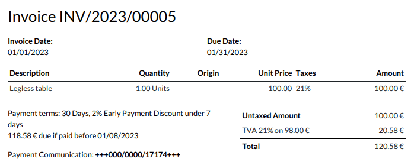

Descuentos por pronto pago y reducción de impuestos¶
Los descuentos por pronto pago son reducciones a la cantidad que un cliente tiene que pagar por un bien o servicio ofrecidos como incentivo para pagar su factura de manera rápida. Estos descuentos suelen ser un porcentaje de la cantidad total en la factura y se aplican solo si el cliente paga en un plazo específico. Los descuentos por pronto pago ayudan a que la empresa mantenga un flujo de efectivo constante.
Example
Crea una factura de €100 el primero de enero. El pago total se tiene que hacer dentro de los siguientes 30 días, pero también ofrece un descuento del 2% si el cliente paga dentro de los primeros 7 días.
El cliente puede pagar €98 hasta el 8 de enero. Después de esta fecha, tendrá que pagar €100 antes del 31 de enero.
También se puede aplicar una reducción de impuestos dependiendo del país o la región.
Configuración¶
Para proporcionar descuentos a los clientes, priero debe de configurar un tipo de reducción de impuestos, verificar las cuentas de pérdidas y ganancias y configurar nuevos términos de pago.
Reducciones de impuestos¶
Según el país o la región, la cantidad de base que se usa para calcular los impuestos varía, lo que puede resultar en una reducción de impuestos.
Para configurar cómo funciona la reducción de impuestos, vaya a . En la sección Impuestos vaya a la función Reducción de impuestos por diferencia de efectivo y seleccione una de las siguientes tres opciones:
- Siempre (al facturar)
El impuesto siempre se reduce. La cantidad de base que se usa para calcular el impuesto es la cantidad de diferencia, no importa si el cliente obtiene algún beneficio o no.
- En pago anticipado
El impuesto se reduce solo si el cliente paga antes. La cantidad de base que se usa para calcular el impuesto es la misma que la venta: si el cliente obtiene un beneficio de la reducción, entonces se reduce el impuesto. Esto significa que la cantidad de los impuestos puede variar después de enviar la factura, dependiendo del cliente.
- Nunca
El impuesto no se reduce. La cantidad de base que se usa para calcular el impuesto es la cantidad total, no importa si el cliente se beneficia o no del descuento.
Example
Supongamos que usted crea una factura de €100 (libre de impuestos) con una tasa tributaria del 21%, el 1 de enero. El pago completo se debe de realizar dentro de los próximos 30 días y también ofrece un descuento del 2% si su cliente paga dentro de los próximos 7 días.
Fecha límite |
Importe total sin pagar |
Cálculo |
|---|---|---|
8 de enero |
€118.58 |
(€98 + (21% of €98)) |
31 de enero |
€120.58 |
(€100 + (21% de €98)) |
Fecha límite |
Importe total sin pagar |
Cálculo |
|---|---|---|
8 de enero |
€118.58 |
(€98 + (21% of €98)) |
31 de enero |
€121.00 |
(€100 + (21% de €100)) |
Fecha límite |
Importe total sin pagar |
Cálculo |
|---|---|---|
8 de enero |
€119.00 |
(€98 + (21% de €100)) |
31 de enero |
€121.00 |
(€100 + (21% de €100)) |
Nota
Las tablas de impuestos, que se usan para el reporte de impuestos, se calculan de manera correcta según el tipo de reducción de impuestos que configuró.
El tipo de reducción de impuestos por diferencia de efectivo puede preconfigurarse de manera correcta dependiendo del paquete de localización fiscal con el que cuenta.
Cuentas de ganancias o pérdidas por descuentos pronto pago¶
Con el descuento por pronto pago, la cantidad que gana depende de cuánto se beneficia el cliente o no del descuento. Esto siempre lleva a pérdidas o ganancias, que se registran en cuentas predeterminadas.
Para modificar estas cuentas vaya a . En la sección Cuentas predeterminadas seleccione las cuentas que quiere usar para la Cuenta de ganancia por descuento de efectivo y la Cuenta de pérdida por descuento de efectivo.
Términos de pago¶
Los descuentos por pronto pago se definen en los términos de pago. Para configurarlos como usted quiere vaya a , y llene los campos % de descuento and Días de descuento.

Ver también
Aplicar un descuento por pronto pago a una factura¶
Para aplicar un descuento por pronto pago a una factura de cliente seleccione los términos de pago que usted creó. Odoo calculará de manera automática las cantidades correctas, los impuestos, las fechas de vencimiento y los registros de contabilidad.
En la pestaña asientos de diario puede mostrar los detalles del descuento. Para hacerlo tiene que hacer clic en el botón de «alternar» y agregar las columnas Fecha de descuento e Importe del descuento.

La cantidad del descuento y la fecha límite también se muestran en la factura generada que se envía al cliente.
Conciliación de pagos¶
Cuando registra un pago o concilia sus estados de cuenta bancaria, Odoo toma en cuenta la fecha del pago del cliente para definir si se pueden beneficiar del descuento por pronto pago o no.
Nota
Si el cliente realiza el pago de la cantidad con el descuento después de la fecha límite para obtener el descuento, usted es quien decide si marca el pago como completo o parcial.
Ver también